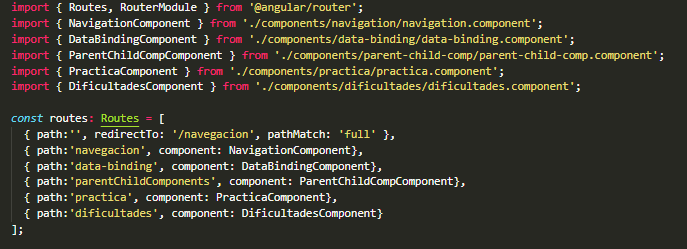

<div>
    <div class="card">
        <div class="card-header"><h1>RouterLink - RouterLinkActive</h1></div>
        <div class="card-body text-justify">
            <p>
                Permite enrutar el contenido de la vista entre los componentes que se desee navegar.
            </p>
            <h2><b>Configuración de rutas:</b></h2>
            <p>
                Para configurar las rutas deben importarse los componentes a los cuales se les va a aplicar el ruteo en el archivo <b>app-routing.module.ts</b>
            </p>
            <p>
                En el arreglo de la constante <b>const routes:Routes=[]</b> se debe definir la ruta (<b>path=''</b>) y el componente (<b>component : NombreComponente</b>) que sera llamado a traves de dicha ruta.
            </p>
            
            <br><br>
            <h2>Recomendaciones: </h2>
            <div class="container content">
                <ul class="list-group list-group-flush">
                    <li class="list-group-item">Si el primer segmento comienza con <b>/</b>, el enrutador buscara la ruta raiz</li>
                    <li class="list-group-item">Si el primer segmento comienza con <b>./</b> o no comienza con barras, el enrutador buscara los hijos de la ruta actual</li>
                    <li class="list-group-item">Si el primer segmento comienza con <b>../</b>, el enrutador subira un nivel</li>
                </ul>
            </div>
        </div>
        <!--<div class="card-footer">Footer</div>-->
      </div>
    
    
</div>